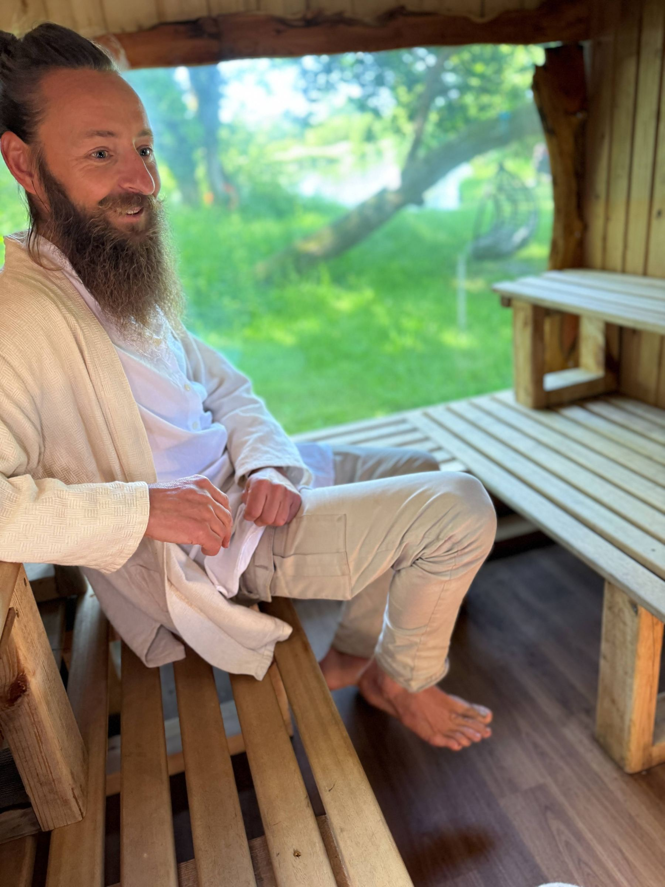

Dmitry Glazkov, vipassana teacher
“I don't offer my personal experience; I give tools so that your unique personality can see its own inner wisdom.”
Dmitry teaches Insight Vipassana in the tradition of Mahasi Sayadaw, alongside yoga and Ayurveda. He has practised for more than sixteen years and taught for over eleven, and every year he sits a month-long or 21-day intensive retreat himself.
For years he assisted a Buddhist monk teacher at the Indriya Retreat Centre on Koh Phangan, Thailand, and now teaches retreats there. In England he founded Sadhama with his wife, Karen Buckland, on the community-led Hardwick Estate in South Oxfordshire. Together they have run more than 35 retreats for over 1,700 participants.
Born in the Tian Shan mountains on the Kazakhstan–China border, Dmitry studied in Russia and Prague, walked 2,000 km to Santiago, and trained in Kundalini and Hatha yoga and in Ayurveda before giving his life to the Dhamma. For five years he taught yoga and meditation to people experiencing homelessness with Crisis Skylight.
Guests describe his teaching as humour and wisdom together: clear, grounded, compassionate, and lived. He loves the original suttas. As he says, “If you don't study the diamond itself, how are you going to know what diamond is?”
In the Dhamma, he says, he is more of a friend than a guru: someone a few steps ahead, helping you with yours.


Karen Buckland
Co-founder of Sadhama and the heart of the kitchen.
Karen is a plant-based chef with more than fifteen years of experience in vegan fine dining and festival catering. She cooks according to Ayurvedic principles, food as medicine, using organic produce grown on the estate. Guests regularly call the food "another level".
Sit with Dmitry by the Thames in 2027.
Book your place